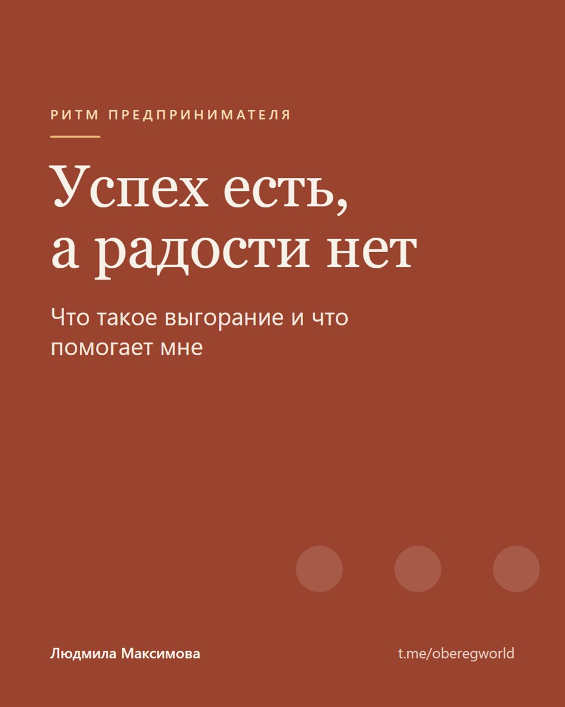
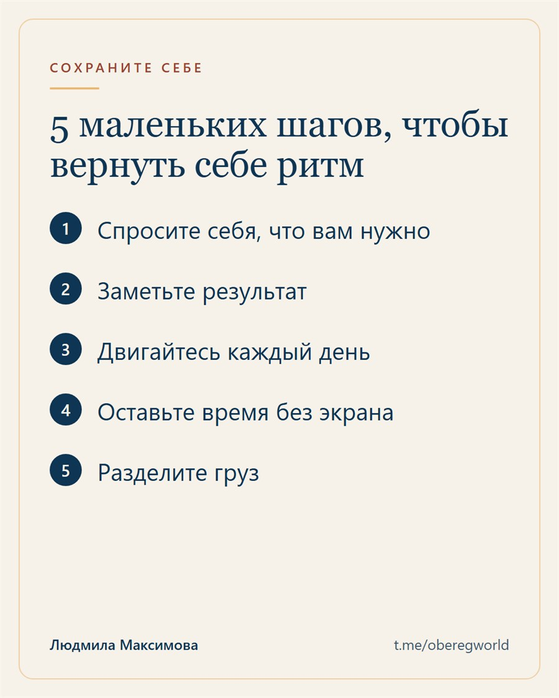

Ритм предпринимателя
Выгорание предпринимателя: когда успех есть, а радости нет
За двадцать лет в предпринимательстве у меня были сделки, которых я ждала месяцами. Документы подписаны, клиенты счастливы, а я уже в завтрашних задачах и даже не замечаю, что победила. Если вам это знакомо, расскажу, что знаю об этом сама.

Коротко
ВОЗ называет выгорание профессиональным феноменом: это результат долгого рабочего стресса, с которым не удалось справиться. ВОЗ описывает его через три стороны: сил нет, работа отдаляется и раздражает, результат даётся всё тяжелее. Предпринимателям это знакомо: в опросе 2026 года 18% назвали выгорание и усталость среди главных трудностей. Мне помогают маленькие регулярные шаги и честный разговор с собой. А если тяжело уже давно, стоит поговорить со специалистом.
Что такое выгорание
Сразу скажу: я не психолог и не берусь ничего определять ни за себя, ни за вас. Я рассказываю о своём опыте и опираюсь на то, как это понятие описывает Всемирная организация здравоохранения.
С 2019 года ВОЗ описывает выгорание как профессиональный феномен и не относит его к медицинским состояниям. По её определению, это результат хронического стресса на работе, с которым не удалось успешно справиться. ВОЗ описывает его через три стороны:
- ощущение, что силы закончились;
- растущее расстояние до своей работы, раздражение или цинизм по отношению к ней;
- снижение эффективности: то, что раньше получалось легко, даётся с трудом.
ВОЗ отдельно подчёркивает, что это понятие относится именно к работе. Для усталости в других сферах жизни его применять не следует.
Почему предпринимателям это так знакомо
Предприниматель отвечает за всё сразу: за клиентов, команду, деньги и настроение в офисе. Начальника, который отправит в отпуск, нет. Границы рабочего дня тоже ставить некому.
Есть и цифры. В опросе Russian Business и агентства «Лампа», опубликованном в мае 2026 года, 18% предпринимателей назвали выгорание и усталость среди главных трудностей. 54% за последний год увидели снижение выручки. А главным мотивом предприниматели чаще всего называли свободу распоряжаться своим временем: так ответили 24%.
Цифры разные, но картина узнаваемая. Знакомо?
Радость от результата не приходит сама. Ей нужен человек, у которого остались силы её почувствовать.
Что помогает мне: 5 маленьких шагов
Рецептов я не раздаю. Ниже то, что я пробую сама, и я честно говорю, где у меня пока не получается.
- Задавать себе один вопрос. «Что мне сейчас на самом деле нужно?» Для меня это самый полезный рабочий вопрос.
- Замечать результат, прежде чем бежать дальше. Закрыли сделку или трудную неделю? Остановитесь и назовите себе, что получилось. Я этому только учусь: привычка сразу хвататься за завтрашние задачи у меня сильная.
- Двигаться каждый день, хоть немного. Мои 10 тысяч шагов у моря то случаются, то проигрывают уютному «завтра». Но неидеальная привычка лучше идеального плана в заметках.
- Оставлять время без экрана. Здесь мне есть куда расти: гаджеты я пока выключаю только перед самым сном. Но работаю над этим.
- Делить груз. Это я только примеряю на себя: делегировать, договариваться о границах, не держать всё на себе. Предприниматель часто уверен, что без него ничего не сработает. Иногда это правда, но гораздо реже, чем кажется.

Когда стоит обратиться к специалисту
Мои маленькие шаги не заменяют помощи. Если тяжело уже давно и отдых не возвращает сил, это хороший повод поговорить со специалистом, например с психологом. Это забота о себе.
А при чём здесь второе дело
Логичный вопрос: зачем уставшему предпринимателю ещё одно дело? Честный ответ: если сил нет совсем, второе дело сейчас не главное. Сначала стоит позаботиться о себе. Новое направление усталость не снимает. Иногда оно её даже добавляет.
Мне всегда было тесно в одном направлении, но это мой характер. Советом для всех я его не считаю. Как я выбирала второе дело так, чтобы оно не съедало основное, я рассказала в статье «Второе дело рядом со своим».
Давайте поговорим о ритме
О своих прогулках, привычках и ритме дня я пишу в Telegram-канале, с переменным успехом и без идеальной картинки. А если хочется поговорить лично, напишите мне в Telegram или WhatsApp. Я отвечу сама.
Источники
- Всемирная организация здравоохранения. Burn-out an «occupational phenomenon». 28.05.2019.
- Retail.ru. 54% предпринимателей столкнулись с падением выручки. Исследование Russian Business и агентства «Лампа», 26.05.2026.